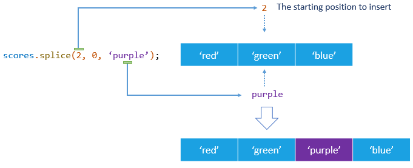
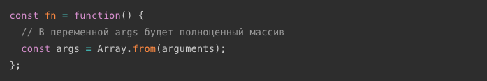
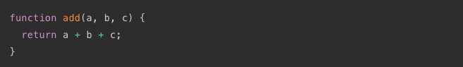

Массив — структура данных для хранения и манипулирования коллекцией индексированных значений. Используются для хранения упорядоченных коллекций данных, например списка курортов, товаров, клиентов в отеле и т. п.
Синтаксис для создания нового массива — квадратные скобки [] со списком элементов разделенных запятыми. В массиве может храниться любое число элементов любого типа.
// Пустой массив
const arr = [];
// Массив clients с тремя элементами
const clients = ['Mango', 'Poly', 'Ajax'];
console.log(clients); // ["Mango", "Poly", "Ajax"]
В качестве ключей-индексов используются цифры, индексация начинается с нуля.

Чтобы получить нужный элемент из массива, после имени переменной которая содержит массив, указывается индекс элемента в квадратных скобках. На место такого выражения будет подставлено значение хранящееся в элементе массива.
const clients = ['Mango', 'Poly', 'Ajax'];
// Указывая в скобках индекс элемента мы получаем его значение
console.log(clients[0]); // Mango
console.log(clients[1]); // Poly
console.log(clients[2]); // Ajax
Элементы массива можно заменять и добавлять, обращаясь к элементу массива по индексу.
const clients = ['Mango', 'Poly', 'Ajax'];
// Значение элемента можно заменить
clients[0] = 'Kiwi';
console.log(clients[0]); // Kiwi
// Или добавить
clients[3] = 'Alex';
console.log(clients[3]); // Alex
console.log(clients); // ["Kiwi", "Poly", "Ajax", "Alex"]
Длина массива динамическая величина и изменяется автоматически при добавлении или удалении элементов. Текущее число элементов массива содержится в его свойстве length.
Свойство length можно изменять напрямую.

Для итерации по массиву или перебора массива, используются циклы, в частности цикл for. Переберем массив клиентов и выведем их имена.
const clients = ['Mango', 'Ajax', 'Poly'];
for (let i = 0; i < clients.length; i += 1) {
console.log('Logging clients: ', clients[i]);
}
С помощью цикла массив можно заполнить данными.
const numbers = [];
for (let i = 0; i < 3; i += 1) {
numbers.push(`label-${i}`);
}
console.log('numbers: ', numbers); // ['label-0', 'label-1', 'label-2']
Инструкия for...of создает цикл, перебирающий итерируемые объекты, такие как массивы и строки. Тело цикла будет выполняться для значения каждого отдельного элемента. Это хорошая замена циклу for если не нужен доступ к счетчику итерации.
for (const variable of iterable) {
// statement
}
// Итерация по массиву
const clients = ['Mango', 'Ajax', 'Poly'];
for (const client of clients) {
console.log(client);
}
// Итерация по строке
const string = 'javascript';
for (const character of string) {
console.log(character);
}
Будем искать имя клиента в массиве имен, если нашли прервем цикл так как нет смысла искать дальше, имена у нас уникальные.

Можно изначально задать message значение неудачи поиска, а в цикле перезаписать его на успех если нашли имя. Но break всеравно пригодится, так как если у нас массив из 10000 клиентов а нужный нам стоит на позиции 2, то нет абсолютно никакого смысла перебирать оставшиеся 9998 элементов.
Используем цикл для вывода только чисел больше определенного значения.

Массивы могут содержать другие массивы как элементы. Это можно использовать для создания матриц.
Для того чтобы перебрать такой массив используются вложенные циклы.
Фундаментальным отличием сложных типов от примитивов, является то, как они хранятся и копируются.
Примитивы: строки, числа, були,null и undefined, при присваивании копируются целиком, по значению (by value).
Со сложными типами всё не так. В переменной, которой присвоен массив или объект, хранится не само значение, а адрес его места в памяти, иными словами — ссылка (указатель) на него, и передаются они по ссылке (by reference).
Представим переменную в виде листа бумаги. Значение этой переменной мы представим в виде записи на этом листе.

Если мы захотим сообщить содержимое этой записи пользователям то мы можем поступить так — сделать физические копии и вручить их каждому, то есть сделать множественные независимые копии (присвоение по значению).

Или поместить лист в закрытой комнате и дать пользователям ключ от этой комнаты, то есть 1 экземпляр с общим доступом (присвоение по ссылке).

Теперь изменим данные на листе бумаги, значение переменной. Очевидно, что посетители комнаты всегда будут видеть изменения которые мы вносим, так как изменяется оригинал и они имеют доступ к нему доступ. И также очевидно, что владельцы бумажных копий не заметят изменений глядя на свои копии.

При передаче по значению, переменным выделяется новая ячейка памяти и в нее копируется данные. Аналогия с множественными копиями бумажного листа имеет вполне реальное воплощение, отдельный лист для каждой копии.
При передаче по ссылке, вместо создания нового объекта, переменной присваивается ссылка (указатель) на уже существующий объект, то есть на его место в памяти. Таким образом несколько переменных могут указывать на один и тот же объект, по аналогии с закрытой комнатой, у них есть ключ доступа к оригиналу листа.
Все примитивные типы присваиваются по значению, то есть создается копия.Сложные типы - объекты, массивы, функции присваиваются по ссылке, то есть переменная просто получает ссылку на уже существующий объект.
split(s) — позволяет превратить строку в массив, разбив ее по разделителю s. Это не метод массива, но рассматриваем мы его сейчас так как раньше мы о массивах не знали.
join(s) — делает в точности противоположное split. Он берет массив и склеивает его в строку, используя s как разделитель.
array.indexOf(x) — возвращает первый индекс, в котором элемент x был найден в массиве, или число -1, если такого элемента нет. Используйте indexOf тогда, когда необходимо получить непосредсвенно индекс элемента.
array.includes(x) — определяет, содержит ли массив некоторый элемент x, возвращая true или false соответственно. Используйте includes тогда, когда необходимо проверить есть ли элемент в массиве и не важен его порядковый номер.
На первый взгляд пример ниже выглядит вполне хорошо. Однако, что если у нас будет больше красных фруктов, к примеру ещё вишня (cherry) или клюква (cranberries)? Будем ли мы расширять условие с помощью дополнительных ||?
Можем переписать условие, с использованием Array.includes, это очень просто и масштабируемо.
Добавляют или удаляют крайние элементы массива. Работают только с крайним левым и крайним правым элементом массива, и не могут поставить или удалить элемент с произвольной позиции. Для наглядности взягляните на иллюстрацию ниже.
push() — позволяет добавить один или несколько элементов в конец массива. Метод возвращает значение свойства length, которое определяет количество элементов в массиве.

pop() — удаляет элемент из конца массива и возвращает удаленный элемент. Если массив пуст, метод возвращает undefined.
pop() — удаляет элемент из конца массива и возвращает удаленный элемент. Если массив пуст, метод возвращает undefined.

В примере кодом описаны иллюстрации выше, первые 3 шага. Создается пустой массив с именем stack и в конец массива добавляется три числа, одно за другим используя push(), затем они удаляются используя pop().
Используются реже.
Синтаксис метода slice() одинаков для строк и массивов. Его просто запомнить. Он позволяет извлекать элементы подмножества массива и добавлять их в новый массив. В большинстве случаев используется для создания копии части или целого исходного массива.
slice(begin, end)splice() — швейцарский нож для работы с массивами, в том случае, если исходный массив необходимо изменить. Позволяет удалять, добавлять и заменять элементы в произвольном месте массива.
Чтобы удалить элементы в массиве, передаются два аргумента.
splice(position, num)Метод splice изменяет исходный массив и возвращает массив, содержащий удаленные элементы.
На рисунке показан вызов метода score.splice(0, 3) из примера выше.

Вы можете вставить один или несколько элементов в массив, передав три или более аргумента методу splice, при этом второй аргумент должен быть равен нулю.
splice(position, 0, new_element_1, new_element_2, ...)На рисунке показан вызов метода colors.splice(2, 0, 'purple') из примера выше.
Метод splice() также позволяет вставить новые элементы в массив при одновременном удалении существующих элементов.
Для этого необходмо передать по крайней мере три аргумента: вторым — количество элементов для удаления, а третим — элементы для вставки. Количество удаляемых и добавляемых элементов может не совпадать.
На рисунке показан вызов метода languages.splice(1, 1, 'Python') из примера выше.

Используется для объединения двух или более массивов. Этот метод не изменяет исходный массив, а возвращает новый.
Очень часто при создании программ участок кода повторяется. А если программа большая, то возникает необходимость повторно использовать подобные участки кода, зачастую с новыми начальными значениями. Воплощением этой идеи являются функции.
Функция - это подпрограмма, независимая частью кода, предназначенная для выполнения конкретной задачи.
Функции можно представить как черный ящик, они получают что-то на входе (данные), и отдают что-то на выходе (результат выполнения кода внутри функции).

Функции это инструмент для структурирования больших программ, уменьшения повторений и изолирования кода.
Функциональное выражение (function expression) — обычное объявление переменной, значение которой будет функция.
Объявим переменную add, и присвоим ей функцию принимающую 3 значения возвращающую результат сложения этих значений.
ВАЖНО! Имя функции это действие, глагол начинающийся с маленькой буквы, отвечающий на вопрос 'Что сделать?'. Например: findSmallesNumber, fetchUserInfo, validateInput.
Определение функции начинается с ключевого слова function, за которым может следовать необязательное имя функции. В круглых скобках идут параметры — перечисление данных которые функция будет получать из вне. Параметров может быть несколько, или вообще их может не быть, тогда записываются просто пустые круглые скобки ().
Далее идет тело функции, заключенное в фигурные скобки {}, содержащее инструкции которые необходимо выполнить при вызове функции. Тело функции всегда заключают в фигурные скобки, даже если оно состоит из одной инструкции.
Оператор return определяет возвращаемое значение. Когда интерпретатор доходит до return, он сразу же выходит из функции, и возвращает это значение в то место кода, где функция была вызвана.
ВАЖНО! Оператор return без выражения возвращает значение undefined. При отсутствии return в теле функции, она все равно вернет значение undefined.
Затем, когда необходимо, функция вызывается с помощью имени и круглых скобок, внутри которых могут быть переданы аргументы.
В JavaScript важен порядок объявления параметров функции. Не существует никакого другого механизма пояснить интерпретатору как значения аргументов функции при вызове связаны с параметрами.
Порядок объявления параметров соответствует порядку передачи аргументов при вызове функции: значение первого аргумента будет присвоено первому параметру, второго аргумента второму параметру и т. д. Если параметров будет меньше чем аргументов, то параметрам без значений будет присвоено undefined.
Функция может либо вызвать побочные эффекты (изменять глобальные переменные), либо возвращать результат своей работы, зависит от задачи. В зависимости от того, какой фрагмент кода будет помещен внутри функции, произойдет либо возврат вычисленного значения, либо изменение состояния программы, иногда оба.
Если при выполнении кода, интерпретатор встречает вызов функции, он приостанавливает выполнение текущего кода и начинает выполнять код из тела функции. После того как весь код функции будет выполнен, интерпретатор выходит из тела функции, возвращаясь в то место, откуда пришел, и продолжает выполнять код ниже вызова функции.
Пошагово разберем выполнение кода примера:
При вызове функции необязательно указывать значения всех аргументов, которые перечислены в параметрах функции. Но иногда, параметрам которым не передали значение через аргумент, бывает необходимо присвоить какое-то значение, отличное от undefined.
Новые возможности ES6 позволяют сделать это очень простым и очевидным образом, указывая значение по умолчанию прямо при объявлении параметров в подписи функции. При такой записи, если значение переданного аргумента равно undefined, в параметр записывается значение по умолчанию.
Доступ к набору всех аргументов можно получить через специальную локальную переменную arguments, которая доступна только внутри функции и хранит все аргументы как псевдомассив.
Псевдомассив — коллекция, имеющая свойство length и возможность обратиться к элементу по индексу, но отсутствием большинства методов для работы с массивом.
Псевдомассив arguments содержит список аргументов, переданных функции при вызове, но количество переданных аргументов может не совпадать с количеством объявленных параметров и это не приведет к ошибке.
Рассмотрим пример использования arguments в функции, которая суммирует любое количество аргументов:
Так как у псевдомассива нету методов вроде slice() или includes(), часто необходимо преобразовать его в полноценный массив. На практике используют несколько основных способов преобразования.
Используя метод Array.from(), который создаст массив из итерируемого объекта.
Используя операцию ... (rest), она позволяет собрать произвольное количество элементов, в нашем случае аргументов, в массив и сохранить его в переменную. Собираем все аргументы используя операцию rest прямо в подписи функции.
Оператор if...else это основной способ создания логических деревьев. Тем не менее, сложные вложенные ветвления делают код более запутанным и трудным для понимания.
Создадим функцию которая обрабатывает снятие денег с личного счета в банке. Функция получает сумму для снятия и текущий баланс счета, после чего в зависимости от условия, выполняет тот или иной блок кода.
Даже в таком простом примере есть группа вложенных условных операторов, среди которых не сразу можно выделить нормальный ход выполнения кода из-за особенности синтксиса if...else.
Паттерн guard clause - это способ использовать возможность досрочного возврата из функции с помощью оператора return, чтобы сделать вложенные условные выражения более одномерными.
Выделим все проверки условий в отдельные операторы if, после чего добавим код идущий в теле else. В идеальном случае, должен получиться плоский список условных операторов, идущих один за другим, а в конце блок который выполнится только в том случае если не выполнится ни один if.
const withdraw = function(amount, balance) {
if (amount === 0) {
console.log('Для проведения операции введите сумму больше нуля.');
return;
}
if (amount > balance) {
console.log('Недостаточно средств на счету.');
return;
}
console.log('Операция снятия средств проведена.');
};
withdraw(0, 300); // Для проведения операции введите сумму больше нуля.
withdraw(500, 300); // Недостаточно средств на счету.
withdraw(100, 300); // Операция снятия средств проведена.
/*
* Проверяется условие. Если оно выполняется, происходит
* console.log и выход из функции. Код идущий после тела if
* не выполнится.
*/
/*
* Если условие первого if не выполнилось, его тело пропускается
* и интерпретатор доходит до этого if.
* Проверяется условие. Если оно выполняется, происходит
* console.log и выход из функции. Код идущий после тела if
* не выполнится.
*/
/*
* Если ни один из предыдущих if не выполнился,
* интерпретатор доходит до этого кода и выполняет его.
*/
Используя такой подход получаем более чистый, плоский и понятный код, который легче рефакторить.
Другой способ создать функцию — использовать ключевое слово function в начале инструкции. Такая запись называется объявление функции (function declaration).
Инструкция определяет переменную add и присваивает ей заданную функцию. Эта форма записи не требует обязательной точки с запятой после закрытия фигурной скобки тела функции.
Особенностью этого синтаксиса является то, что функцию можно вызвать до ее объявления в коде. Это может быть удобно, потому что не нужно беспокоиться о необходимости определять все функции выше того места, где они используются. Механизм поднятия идентификаторов описан в следующей главе "области видимости" в разделе Hoisting.
С другой стороны, при таком синтаксисе может быть сложно отследить связь между местом объявления функции и местом ее вызова. Современные гайды по стилю кода, составленные большими компаниями с многолетним опытом разработки, так же склоняется к использованию функциональных выражений. Поэтому рекомендуется использовать функциональные выражения, вместо объявлений функции.
Область видимости (scope) — это независимая от языка концепция, которая описывает доступность переменных в исполняемом коде.
Scope chain (цепочка областей видимости) - области видимости образуют иерархию, так что дочерние области имеют доступ к переменным из родительских областей, но не наоборот.
Есть три типа областей видимости:
Это можно представить как дом с комнатами. Дом находится в глобальной области видимости. Каждая функция и блок создают новую комнату, вложенную внутрь дома. Переменные, объявленные внутри этих комнат, доступны только тогда, когда вы находитесь внутри этой комнаты. Вне комнаты эти переменные недоступны.
Интерпретатор пытается сначала найти переменную в той области видимости, в которой к ней обратились. Если такой переменной в локальной области видимости нет, то он выходит наружу, на один уровень за попытку, пока не найдёт значение или не дойдет до самой верхней области видимости (глобальной) и поймет, что переменную с таким идентификатором невозможно найти, так как ее просто нет, тогда будет ошибка о том, что переменная не объявлена.
Функция add возвращает сумму a и b. Переменная a объявлена внутри функции, b нет.
Пытаясь решить выражение a + b, интерпретатор ищет значения a и b. Поиск начинается внутри локальной области видимости — внутри функции add. Он находит значение a и переходит к b. Невозможно найти значение b в локальной области видимости, поэтому поиск расширятеся до наружной области. Тут он находит b — это 10. Выражение a + b превращается в 5 + 10, в результате получаем 15.
Как уже говорилось, функции создают собственную локальную область видимости. Переменные, созданные внутри функции, включая параметры, локальны внутри этой функции и не доступны коду из вне. Локальные переменные будут создаваться каждый раз при вызове функции, и их отдельные инкарнации никак друг с другом не связаны.
Глобальный value объявлен вне тела функции и его значение будет выведено в консоль. Локальный value внутри функции add по прежнему виден только внутри этой функции. Эти два value не имеют ничего общего друг с другом, они находятся в разных областях видимости. Они не схлопываются в одно целое, не смотря на то, что у них одно и то же имя. В свою очередь innerValue не доступна вне тела функции.
Такое поведение помогает предотвратить случайное взаимодействие между функциями. Если бы все переменные использовались в любом месте программы, было бы очень трудно убедиться, что одна переменная не используется для разных операций.
Относясь к локальным для функций переменным так, что они существуют только внутри функции, язык делает возможным работу с функциями будто с изолированными контейнерами, что позволяет не волноваться про весь код целиком.
В языках программирования, в том числе в JavaScript, код исполняется в две фазы.
Фаза компиляции, интерпретации или оценки (compile time, evaluation time) - подготовка перед исполнением кода, проверка валидности синтаксиса исходного кода.
Во время этой фазы компилятор или интерпретатор находит синтаксические ошибки, ошибки типизации и т. д. То есть код еще не выполняется, только оценивается. Если эта фаза прошла успешно, это как минимум значит что в коде нет синтаксических ошибок и его можно запустить на исполнение.
Фаза исполнения (runtime) - скрипт начинает исполняться, выполняются инструкции вызовов функций и оценки выражений, роисходит поиск необходимых идентификаторов в соответствующих областях видимости и тому подобное.
Если эта фаза завершилась успешно, значит скрипт написан без явных ошибок и закончил свою работу. На этой фазе могут быть ошибки связанные с отсутствующими свойствами и переменными, преобразованием типов и т. д., то есть что-то, что происходит только во время выполнения кода.
Попробуйте выполнить следующий код. Так как мы сделали опечатку и вместо const пытаемся объявить переменную value ключевым словом cos, на фазе компиляции будет выявлена синтаксическая ошибка и фаза исполнения даже не запустится. В консоли мы сразу увидим сообщение об ошибке.
Поднятие переменных (hoisting) - это механизм интерпретатора, который, до фазы исполнения кода, поднимает объявления переменных в начало области видимости (блочной или функции) в которой они были объявлены.
Именно поэтому работает function declaration и так странно ведут себя переменные объявленные используя var - их объявления поднимаются в начало области видимости функции в которой они были объявлены.
Переменные объявленные используя let или const так же поднимаются, но при этом подчиняются блочной области видимости, ничем не инициализируются по умолчанию и не доступны для обращения до того места в коде где были объявлены в коде.
Более детально про поднятие идентификаторов и ключевые словах var, let и const читайте в этой статье.
Стрелочные функции имеют сокращенный, более лаконичный синтаксис, и некоторые особенности. Подобно функциональным выражениям они присваиваются переменным или могут быть анонимными. Их использование очень удобно и значительно сокращает объемы кода, особенно когда функция маленькая.
Все стрелки создаются с помощью функционального выражения, если функция не анонимна, то она должна быть присвоена переменной. Поэтому следует помнить, что перед использованием стрелочной функции её всегда необходимо создать заранее.
Слово function не используется, вместо этого сразу идет объявление параметров, за которыми всегда следует символ =>.
После => идет тело функции. Здесь может быть два варианта: с фигурными скобками и без них.
У стрелочных функций нет локальной переменной arguments, содержащей все аргументы. Если необходимо собрать все аргументы в массив, используется операция rest.